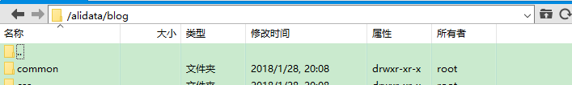
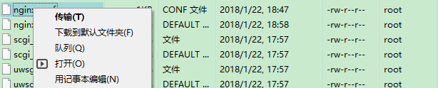
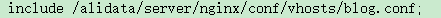

大家好~，我今天给大家分享一下，我个人博客的搭建过程（三）。
废话不多说，大家如果有疑问，QQ:806267856询问。
上节我们在我们的云服务器端部署了web服务。这节我们就可以上传我们写好的网页文件，并成功访问，
上传网页文件：
将你写好的html/php等文件，通过Xftp上传到web服务器中，比如，我在根目录下的alidata文件夹下创建blog文件夹，并将我的工程文件copy到blog文件夹下。 
此时如果通过你的域名访问到的应该是一键安装包安装的phpWind，如何让域名访问到的是我们自己的网页文件呢？需要重要的一步。
更改配置文件：
找到alidata文件夹下server文件夹下nginx-1.4.4下（/alidata/server/nginx-1.4.4）的conf文件夹，在这里我们会看到有nginx.conf和nginx.conf.default两个文件，这两个文件是重要文件。分别是nginx的配置文件，和配置文件的默认样式。
我们选中nginx.conf文件右键用记事本编辑，
会看到一堆配置文件，直接拉到最后一行，将原本的include的指向路径，改为如下所示的路径。
然后我们找到conf文件夹下vhosts文件夹下的blog.conf，没有找到那我们就自己创建（复制default.conf文件然后改名即可）。创建完毕，右键记事本编辑打开。

按照上图中修改，主要将sever_name为你的域名。root改为你的blog文件路径。剩下的暂时不需要改动了。
然后保存文件，并在Xshell中运行/etc/init.d/nginx start即可开启nginx服务器。至此，在浏览器中输入域名，就可以访问自己的网站了。（当然这一切都是在你写好了html等文件的基础上哦）